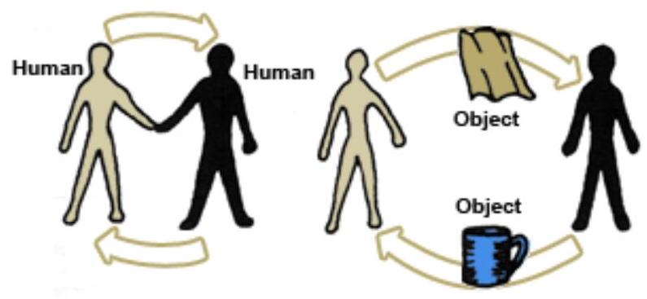
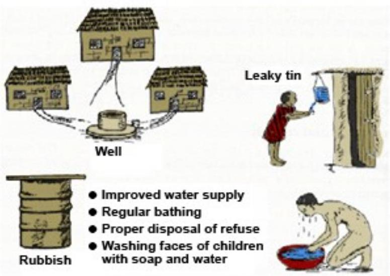

SECTION 3: Contact Diseases
Objectives
By the end of this section you will be able to:
- List factors that favour the transmission of contact (contagious) diseases
- Identify signs and symptoms of infections, namely; scabies, fungal skin infections and trachoma
- Describe the management of contagious diseases
- Describe the control measures of contagious diseases
Transmission of Contact Diseases
A large number of patients seen in your health facility, particularly school children, are suffering from contact diseases which are easily preventable. Contact diseases tend to occur in clusters within households, children's play groups, schools and workplaces. They are passed from one person to another either directly by skin-to-skin contact or indirectly by handling contaminated objects such as clothing, bedding or combs. Such groups of infected people are known as clusters.
Transmission of Contagious Diseases
(Adapted from Communicable Diseases Manual, 1999. Transmission of Contagious Diseases.)
List four factors that increase the transmission of contact diseases.
Factors Increasing the Transmission of Contact Diseases.
- Close personal contact (for example: sexual intercourse)
- Inadequate housing leading to overcrowding
- Poor personal hygiene usually due to inadequate water supply
- High population density as in urban (slums) areas
Scabies
This is a parasitic infection of the superficial layer of the skin characterised by severe itching. It is caused by the female of an insect called Sarcoptes Scabiei (itch mite). The female mite burrows in to the skin and makes a small tunnel. Within the tunnel, the insect deposits its eggs and faeces. The eggs hatch in four to five days and the larvae leave the mother's tunnel and bury themselves in the skin and in other places. The larvae do not make tunnels.
Mode of Transmission
Scabies is spread through direct close body contact, as in bed, or through contact between parents and children or among children playing together in schools. Transmission of scabies can also occur indirectly through clothing or bedclothes. Poor living conditions and poor hygiene promotes the spread of scabies.
Clinical Picture
The patient presents with intense itching, especially at night, and eczema-like signs. You will also find an itchy rash with typical distribution especially where the skin is curved (between fingers, elbows, buttocks, etc). Because it is very itchy, you might also find that the skin is torn with scratches and thus secondary infection often follows.
There are a number of reasons why people with scabies do not seek early medical attention. The skin lesions may be so common that they are not considered to be a disease. Also people who suffer from leprosy or other diseases which interfere with normal sensation may not feel the itching caused by scabies.
Management
The whole family should be treated together with the patient to prevent re-infection. The management of scabies is as follows:
- The patient should take a warm bath.
- Rub a handful of $10\%$ Benzyl Benzoate Emulsion (BBE) all over the body.
- After 24 hours, the patient should bathe again and put on clean clothes.
- BBE does not kill the eggs of Sarcoptes Scabiei and therefore the treatment must be repeated after four to seven days to kill those larvae which have hatched since the first treatment.
- If itching is severe treat it symptomatically with calamine lotion.
Prevention of Scabies
The best way of preventing and treating scabies is good personal hygiene. Regular firm bathing, washing of clothes and frequent use of soap will control scabies.
Dermatomycosis
The term dermatomycosis means fungal infections of the skin and mucous membranes. Fungal skin infections are mainly a problem of personal appearance rather than illness, but it is important to distinguish them from leprosy and syphilis. Also, fungal skin and mucous membrane infections are sometimes indicators of immunosuppression as occurs in AIDS, cancer and tuberculosis.
Mode of Transmission
Fungal infections are usually spread by direct and indirect contact. Genital infections such as vulvo-vaginitis may be spread during sexual intercourse.
Clinical Picture
A fungal infection typically produces a flat patch or shamba-like growth on the human skin. This patch may be found on the head, on dry exposed body skin, between the toes, or in moist places like the mouth or private parts. Each of these patches (depending on where they are found) looks slightly different and has a different name, but they are all fungi. Fungal infections can be divided into two groups: ringworms and candiadiasis.
Ringworms
Ringworm manifestations are described in Latin after the areas of the body they commonly affect:
- Tinea capitis (ringworm of the scalp)
- Tinea corporis (ringworm of the body)
- Tinea pedis (ringworm of the foot)
- Tinea unguium (ringworm of the nails)
- Tinea versicolor or pityriasis
Characteristics of Ringworm Diseases
(Adapted from Communicable Diseases Manual, 1999, Characteristics of Fungal Skin Infections.)
| Fungus | Risk Factors | Main Symptoms | Diagnosis | Treatment |
|---|---|---|---|---|
| Tinea Capitis | Children under 10 | Brittle hair; areas of broken hair on scalp |  |
Whitefield's ointment b.i.d. for 3 weeks |
| Tinea corporis | Excessive sweating; hot and humid areas | Ring-shaped lesions; central healing | Branching filaments crossing borders of cells | Keep dry and clean |
| Tinea pedis (athlete's foot) | AIDS | Scaling and cracking of skin between toes | Apply Whitefield's ointment daily | |
| Tinea unguium | Nail injuries; corticosteroids | Thickening, discoloration or brittleness of nails |  |
Surgical removal of nails plus Whitefield's ointment daily for 16 weeks |
| Tinea versicolor | AIDS; excessive sweating; hot humid areas | Superficial small round light coloured areas | Short filaments, round thick walled cells, budding | Personal hygiene |
Candiadiasis
Candiadiasis which is also known as moniliasis or yeast infection manifests in the following ways:
- Oral thrush - patchy white dots which appear on the mucous membrane of the mouth
- Vulvo-vaginitis
- Balanitis
- Intertrigo
Characteristics of Candiadiasis Diseases
(Adapted from Communicable Diseases Manual, 1999, Characteristics of Fungal Skin Infections.)
| Fungus | Risk Factors | Main Symptoms | Diagnosis | Treatment |
|---|---|---|---|---|
| Oral thrush | Measles; Newborn; $\checkmark$ulvo-vaginitis of mother after antibiotics; AIDS | Pseudomembranes on mucous membranes | G.V paint | |
| Vulvo-vaginitis | Pregnancy; Diabetes; AIDS; Post-antibiotics | Thick white vaginal discharge and itching | Nystatin vag. Tab, G.V. paint | |
| Balanitis | Lack of personal hygiene (acquired by sexual intercourse) | Itching and redness |  |
Hygiene, G.V paint |
| Intertrigo | Fatness; Diabetes; Humid areas (armpits, breast folds, between toes) | Intertriginous areas of redness (like eczema) | Long filaments, oval cells budding | G. V paint; (Diet in diabetes); Keep areas dry by exposure and talcum powder. |
Trachoma
This is a chronic inflammation of the conjunctiva and the cornea of the eye. It is caused by an organism called Chlamydia trachomatis of the Chlamydiae group. Other organisms of the Chlamydiae group cause non-gonococcal ophthalmia neonatorum, non-gonococcal urethritis, cervicitis and salpingitis. Trachoma is a major cause of blindness especially in those parts of East Africa where water is scarce, such as among the pastoralist communities who inhabit the drier grasslands.
Mode of Transmission
Trachoma is very common among communities living in dry areas where there is scarcity of water. Transmission of trachoma is by direct contact with the eye discharge of an infected person. Flies and fingers are important in the transmission of the disease. After infection, the disease progresses very slowly all the time destroying the cornea and the conjunctiva, eventually leading to permanent blindness in one or both eyes. The early stages of the diseases are the most infective and transmission is high among children.
Clinical Picture
Trachoma develops in four stages.
Stage 1: Early Trachoma
Initially the eyes are red and watery (as in ordinary conjunctivitis). After 30 or more days, follicles (small pinkish-grey lumps) form inside the upper eyelids. To see these you would have to turn back the lid. Usually there is a little pus in the eye, but if the pus is copious this may indicate a secondary infection by bacteria. Examination of scrapings from the conjunctiva in the laboratory show the cells with a characteristic dark object in the cytoplasm. The dark object is called an inclusion body and its presence in the cell helps to confirm the diagnosis of trachoma.
Stage 2: Pannus Formation
Normally, the cornea has no blood capillaries on it. But during this stage, many tiny blood vessels are found to be growing towards the edge of the cornea. These tiny blood vessels which grow in the cornea are called pannus. You can see the pannus by using an ordinary magnifying glass. Again, the presence of both the follicles and the pannus strongly suggests the diagnosis of trachoma.
Stage 3: Scarring of the Conjunctiva
After several years the follicles on the conjunctiva slowly begin to disappear leaving behind whitish scars on the conjunctiva. In the cornea, the small blood vessels degenerate. The vision becomes hazy and remains so for many years unless there is rupture of the cornea scars, in which case blindness occurs.
Stage 4: Entropion and Trichiasis Formation
The scars formed after the healing process,several years after the onset of the disease, are the ones that do the greatest damage. Due to this scarring, the scar tissue retracts (shortens), thereby causing the eyelids to become thick and to turn inwards. This is called entropion. As the thick, rough eyelids turn inwards, the eyelashes point inwards and rub against the cornea. This is called trichiasis. trichiasis adds to the damage already done to the eye and results in blindness
The drug of choice for the first three stages is $3\%$ tetracycline topical eye ointment twice a day for five days every month for six months. Stage four of the disease with entropion must be treated surgically. It is essential to do this as soon as possible because every time the patient blinks it increases corneal damage. If it is not possible to perform surgery in your health facility, you can remove the in-turned eyelashes by pulling them out with sterile forceps. This should be done before you refer the patient. While entropion operations can be carried out at the health centre level, pannus and opacity of the cornea have to be done by eye specialists.
Prevention and Control of Trachoma
Trachoma is an example of diseases that are associated with lack of water in the community (water scarcity). The most effective way of controlling and eradicating trachoma is through supply of adequate water to the community. Regular bathing and washing of children's faces with water and soap should be encouraged. Other additional measures include:
- Where water is scarce, the community should be taught how to use the 'leaky tin' (a technique where water for hand washing is put in a container that has a small hole near the bottom, the hole is closed with a piece of stick and when the sick is removed water trickles slowly. It minimises wastage of precious water in water scarce areas and improves personal hygiene) and be motivated to use it
- Reducing the fly population in the community through proper disposal of refuse and waste
- Early treatment of infected individuals ... Mass treatment especially of school children who live in trachoma endemic areas using $3\%$ tetracycline eye ointment twice a day for three to five days each month for six months
Prevention and Control of Trachoma
